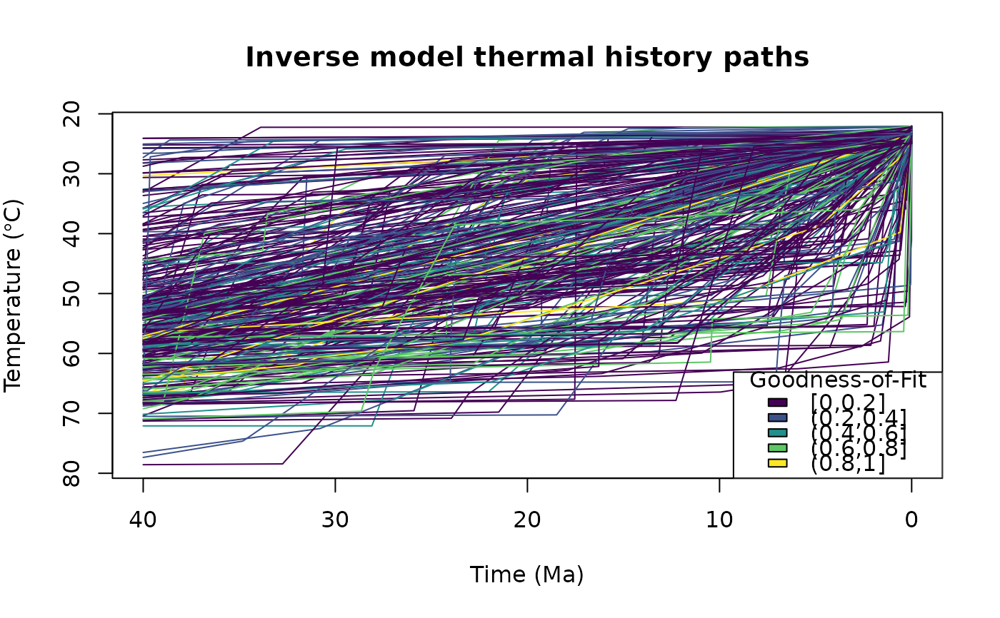
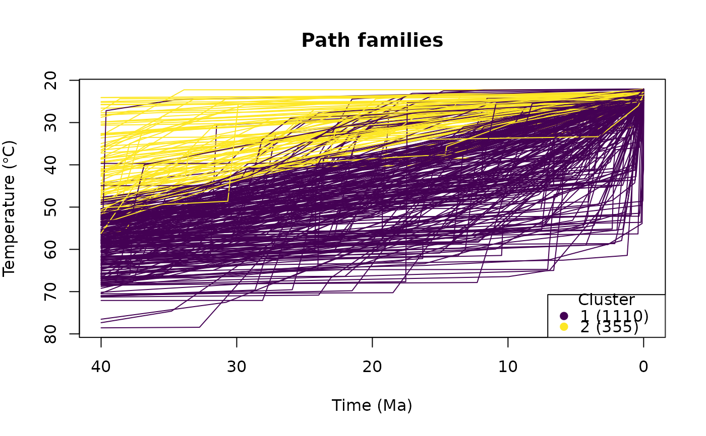
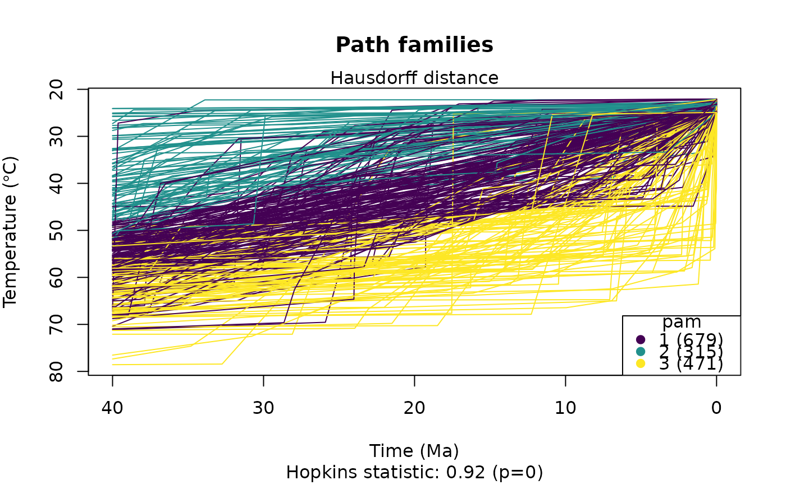

Plots the time-temperature paths. If the input x is a "HeFTy" object or a
data.frame containing the goodness of fit values (as. Comp_GOF column),
the paths are color coded by the goodness of fit. If cluster is specified,
the paths are color coded by the clusters.
Arguments
- x
either an object of class
"HeFTy"(output ofread_hefty()) or adata.framecontaining thetime,temperature, andsegmentcolumns of the modeled paths.- cluster
(optional) Either a data.frame containing the
segmentandclustercolumns to be merged with data inx- do.cluster
logical. Whether clustering with arguments specified in
cluster.paramsshould be applied. This will add information about the used dissimilarity measure and Hopkins statistic to the plot. Is ignored ifclusteris specified.- cluster.params
list. Arguments passed to
cluster_paths()function. Only effective whendo.cluster = TRUEandcluster = NULL.- pal
color function
- breaks
breaks to cut the GOF values
- ...
options passed to
pal
Examples
# example data
data(tT_paths)
# Plot the paths:
plot_paths(tT_paths)

# Show predefined path clusters:
cl <- cluster_paths(tT_paths, 2)
plot_paths(tT_paths, cluster = cl)

# Calculate cluster while plotting:
plot_paths(tT_paths, do.cluster = TRUE, cluster.params = list(k = 3, method = "pam"))
